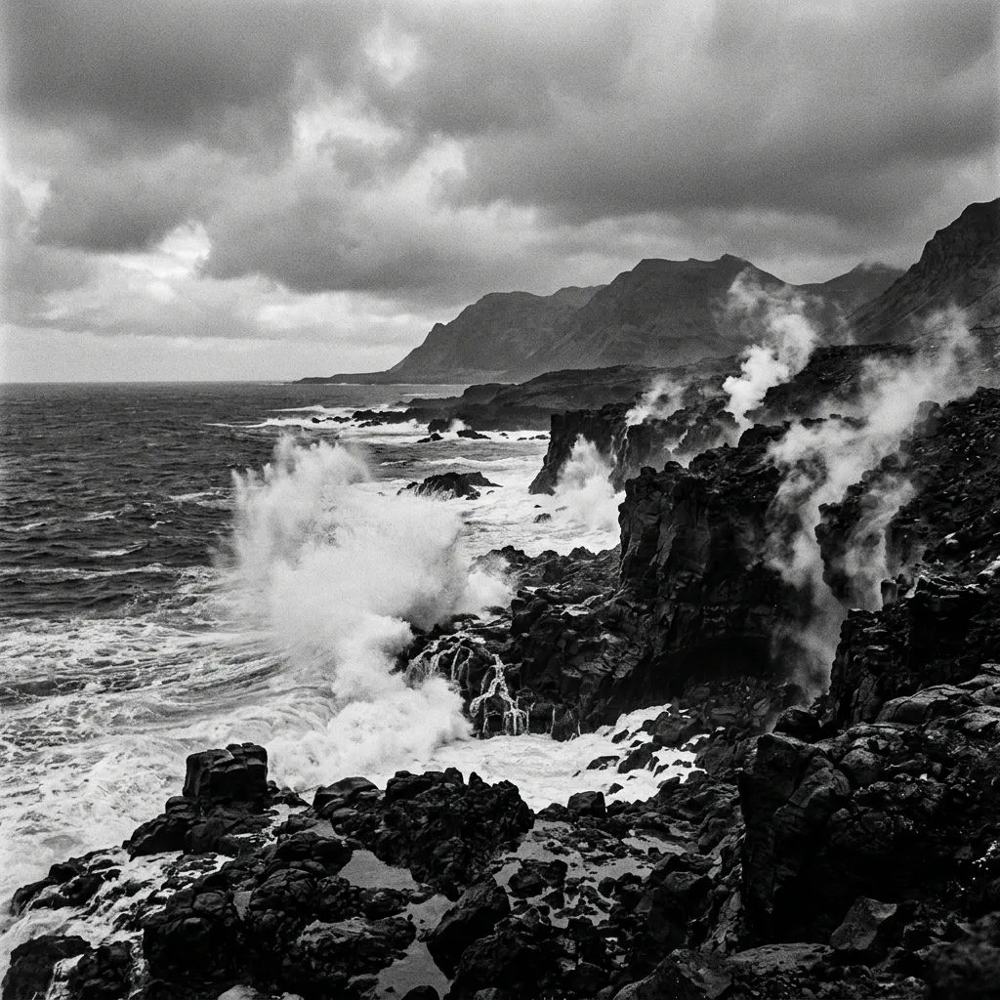
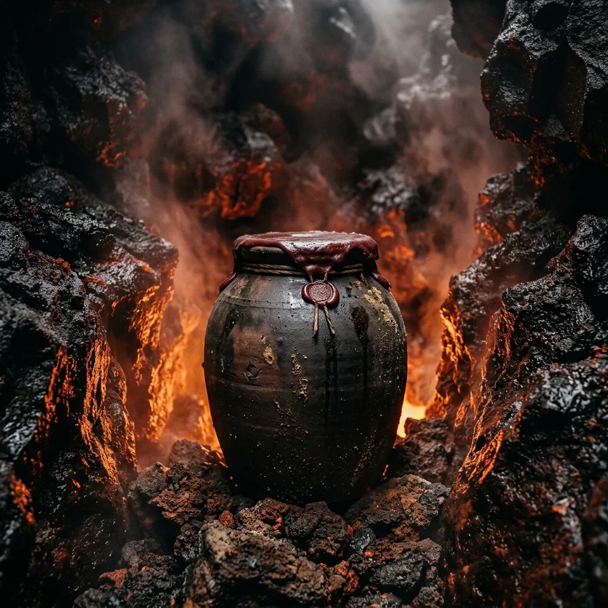
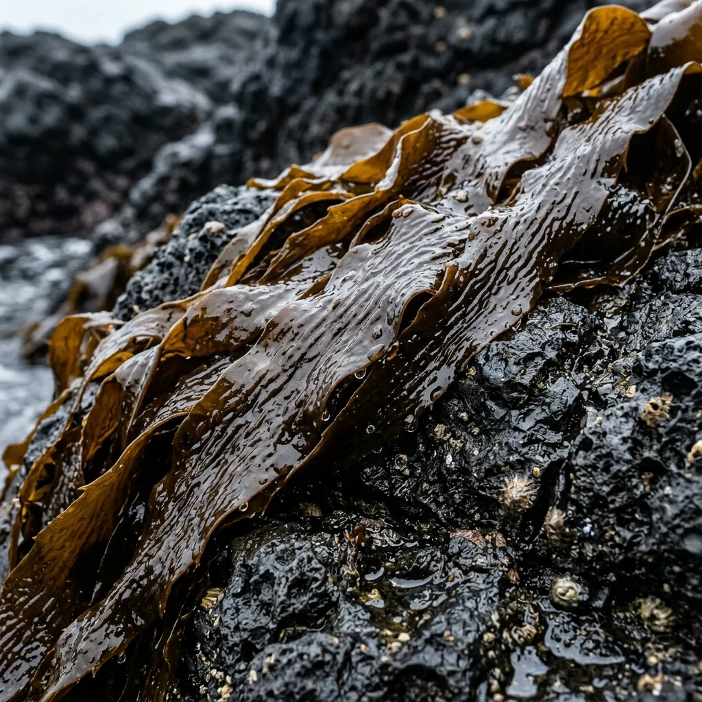

Fermented in Volcanic Vents at Forty-Six Degrees South.
Rare sub-Antarctic mineral umami pastes aged by subterranean thermal steam on Marion Island.
On a sub-Antarctic outcrop buffeted by sixty-knot Roaring Forties gales, we bury hand-harvested bull kelp inside active geothermal venting fissures. For eighteen months, constant subterranean steam slowly breaks down dense ocean minerals without modern electricity or artificial temperature control. The resulting pitch-black umami paste is salvaged by hand and sealed for the world’s most relentless culinary laboratories.
Reserve Batch AllocationZero Kilowatts. Eighteen Months of Volcanic Steam.
Modern culinary fermentation relies on climate-controlled cabinets, digital humidor sensors, and steady electrical grids. On Marion Island, our thermal chambers are natural subterranean fissures sliced into ancient basalt flows. Ambient surface temperatures hover near freezing year-round, but three metres into the basalt rock, volcanic steam vents maintain an unyielding 42°C environment. We pack raw Durvillaea antarctica bull kelp into heavy vitrified clay crocks, seal them with sea-wax, and lower them into the thermal drafts.
Inside the fissure, the heat is not static; it pulses with the geothermal respiration of the island. Over eighteen months, natural autolysis liquefies the tough cellular walls of the kelp, concentrating marine glutamates and mineral salts into a dense, tar-like extract. No cultivated yeast or commercial starters are introduced. The entire process is driven by indigenous sub-Antarctic microflora capable of surviving extreme thermal gradient swings. When brought to the surface, the paste exhibits an intense, smoky sea-salt profile that synthetic culinary methods cannot replicate.

Harvesting in the Roaring Forties
Foraging along the black coastal shelves of Marion Island is a high-risk marine operation executed in hostile conditions. There are no calm days here; the Roaring Forties drive massive, freezing ocean surges relentlessly against the volcanic shoreline. Our harvest teams operate strictly within narrow four-hour tide windows, mandated by severe weather protocols and unpredictable rogue swell activities.
Clad in heavy 7mm neoprene dry-suits, operatives secure themselves to sheer basalt rock faces, waiting for brief recessions in the tide. When the swell recedes, dense Durvillaea antarctica fronds are severed manually using titanium-edged blades—the only material resistant to the abrasive, salt-scoured environment. Speed is paramount. Once severed, the kelp must be transported immediately to the subterranean thermal vents before frost-scredding damages the cellular structures required for optimal autolysis.
Review Expedition Logs
Active Thermal Batch Vault
Due to cargo constraints and volatile thermal venting, our yield remains strictly limited. Each batch matures under hyper-specific geothermal parameters, yielding distinct salinity percentages and flavour profiles.
Batch 07 (Bull Kelp & Mysid Extract)
- Volume Limit: 80 jars
- Steam Temperature: 42.4°C
- Salinity: 18.2%
- Dwell Duration: 18 months
Batch 12 (Charred Basalt & Limpet Umami)
- Volume Limit: 45 jars
- Steam Temperature: 45.1°C
- Salinity: 22.0%
- Dwell Duration: 24 months
Batch 04 (Sub-Glacial Salt Slurry)
- Volume Limit: 60 jars
- Steam Temperature: 39.8°C
- Salinity: 15.5%
- Dwell Duration: 14 months
Field Analysis & Microbial Verification
Extreme geographical isolation acts as our primary sanitation protocol. Sourced thousands of kilometres from industrial shipping lanes and human pollutants, our extracts undergo maturation in untainted geothermal chambers. To ensure import clearances across international borders, every retrieved batch receives rigorous independent clearance from accredited SANAS laboratories.
"The depth of salinity in Batch 07 forces us to reconsider synthetic umami entirely. It tastes like the sheer violence of the Southern Ocean distilled into a single gram." — Head of Research, Tokyo Experimental Kitchen
"A microbiological anomaly. The structural breakdown achieved by volcanic steam produces a raw, smoky profile that no climate-controlled lab has managed to replicate." — Culinary Director, Copenhagen Research Vessel
Secure an Annual Batch Allocation
Supply limits are non-negotiable. Annual extraction capacities are strictly governed by the payload limits of the S.A. Agulhas II polar supply and research vessel. Allocations are granted preferentially to research kitchens and culinary institutions operating at the frontier of flavour engineering.
Expedition Logistics Base: Marion Island Research Base, Prince Edward Islands.
Coordinates: 46°54′S 37°45′E
Delivery Cycle: Concurrent with SANAP relief voyages. Next dispatch pending.